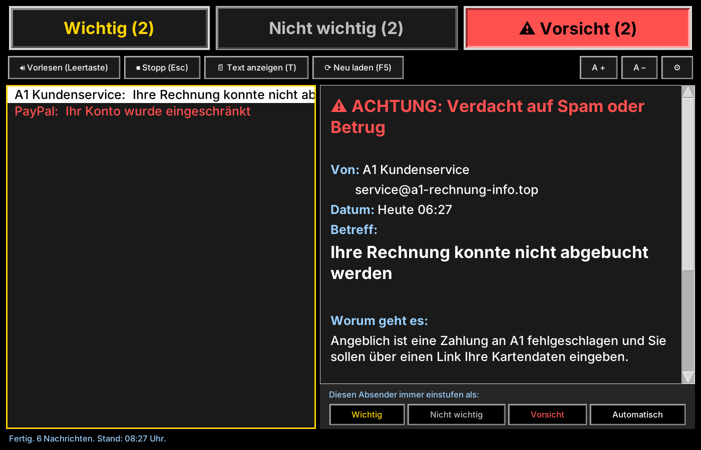

Mail-Assistant
Ein kleines Windows-Programm für Menschen, die mit dem E-Mail-Programm nicht mehr gut zurechtkommen oder schlecht sehen. Es liest das Postfach, sortiert die Nachrichten vor und zeigt sie groß und kontrastreich an.
Wichtig
Nicht wichtig
⚠ Vorsicht


Was das Programm macht
- Holt die Mails der letzten Tage per IMAP, nur lesend. Es wird nichts gelöscht, verschoben, beantwortet oder als gelesen markiert. Thunderbird oder Outlook laufen unverändert weiter.
- Teilt jede Nachricht in Wichtig, Nicht wichtig oder Vorsicht ein und schreibt in einfachen Worten dazu, worum es geht und was zu tun ist.
- Erkennt typische Betrugsmerkmale: gefälschte Absender (SPF/DKIM/DMARC), Markennamen mit fremder Domain, verdächtige Links und gefährliche Anhänge.
- Liest Nachrichten auf Wunsch vor (Windows-Sprachausgabe).
- Eigene Regeln pro Absender oder Domain, z. B. „Ordination immer wichtig“. Wirkt eine Mail gefälscht, greift die Regel nicht.
- Aktualisiert sich selbst, sobald eine neue Version auf GitHub erscheint.
Bedienung
- 1 2 3 wechseln zwischen den Gruppen
- ↑ ↓ nächste oder vorherige Nachricht
- Leertaste vorlesen, Esc stoppen
- T ganzen Text statt Zusammenfassung zeigen
- Strg + + / – Schrift größer oder kleiner
Herunterladen
Die fertige Mail-Assistant.exe samt SHA256-Prüfsumme liegt bei den Releases. Am besten nach %LOCALAPPDATA%\Programs\Mail-Assistant\ kopieren, damit das Selbst-Update funktioniert.
Datenschutz
Zur Einstufung werden Absender, Betreff, Links und der Anfang des Mailtexts an die Claude-API von Anthropic geschickt. Jede Mail nur einmal. Passwort und API-Key liegen in der Windows-Anmeldeinformationsverwaltung, nicht im Klartext. Ohne API-Key arbeitet das Programm mit einfachen lokalen Regeln.